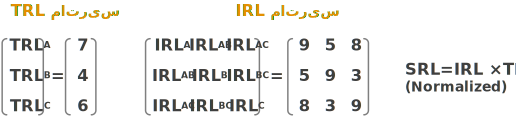
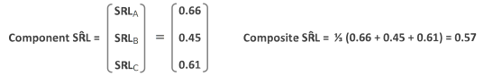

نقش فنکاوی در انتخاب سامانه درست
(ساسان عظیمی)
دنیای امروز، بسیار بیشتر از حتی چند سال پیش، با فناوری ترکیب شده و انسانها حداقل یک مجموعه پیچیده از فناوریهای مختلف، همانند تلفن همراه را در دست دارند، هر نوع نقصانی در فناوری توزیع و تولید الکتریسیته زندگی آنها را مختل نموده و چشم به راه فناوریهای پزشکی برای حفظ سلامت خود هستند. به همین دلیل مفهوم کلی توسعه، تا حد زیادی و به درستی به مفهوم «توسعه فناوری» نزدیک شده است. اما در عمل هیچگاه هدف یک شرکت یا مجموعه دانشبنیان، تنها توسعه فناوری نبوده بلکه هدف اصلی ارائه محصولی موفق در چرخه کسب و کار است؛ هر چند گاهی برای رقابت و ایجاد ارزش، توسعه فناوری، یک ضرورت میشود. هدف از این نوشتار، بررسی روشی عملیاتی و مبتنی بر هوش مصنوعی برای انتخاب دقیق راهبرد و سیاستگذاری توسعه در یک سازمان یا شرکت است.
اگر چرخه پژوهش، تولید و فروش را یک سامانه فرض کنیم، انتخاب درست و توسعه موفق این سامانه، به چرخه کسبوکار کمک کرده و به همان نسبت، انتخاب نادرست سامانه و چالش در توسعه آن، تا مرز نابودی کسب و کار پیش میرود. مخاطب اصلی این نوشتار، مدیران، مشاوران و کارشناسان در حوزه ارائه راهبرد، سیاستگذاری و توسعه فناوری هستند.
توسعه فناوری یکی از جدیترین چالشهای سازمانها، شرکتها و دولتها بوده و از حدود سال 1974 سعی شده است تا یک استاندارد برای اندازه گیری میزان توسعه و بلوغ فناوری ایجاد شود. استاندارد Technology readiness level (TRL) برای اولین بار توسط ناسا برای اندازه گیری سطح بلوغ فناوری ایجاد شد [1] و پس از مدتی بهعنوان یک استاندارد جهانی برای سنجش بلوغ فناوری و بیشتر در آمریکا و اروپا بهکار گرفته شد. بطور نمونه، اتحادیه اروپا برنامه ریزی افق 2020 [2] و یا برنامه نوآوری افق 27-2021 را بر اساس این استاندارد ارائه نموده است[3]. به همین نسبت نیز از TRL برای توسعه کسب و کارهای کوچک نیز استفاده میشود [4].
طبق استاندارد TRL، میزان بلوغ یا آمادگی یک فناوری در نه سطح تعیین میشود [2]:
| TRL 1 | Basic principles observed |
| TRL 2 | Technology concept formulated |
| TRL 3 | Experimental proof of concept |
| TRL 4 | Technology validated in lab |
| TRL 5 | Technology validated in relevant environment (industrially relevant environment in the case of key enabling technologies) |
| TRL 6 | Technology demonstrated in relevant environment (industrially relevant environment in the case of key enabling technologies) |
| TRL 7 | System prototype demonstration in operational environment |
| TRL 8 | System complete and qualified |
| TRL 9 | Actual system proven in operational environment (competitive manufacturing in the case of key enabling technologies; or in space) |
در دنیای واقعی، توسعه فناوری در یک چرخه درست و در یک سامانه روی میدهد و TRL تنها یکی از سنجهها برای محاسبه و تشخیص درستی این سامانه است. شاید برای راحتی کار و کاهش پیچیدگی محاسبات فقط از TRL برای تشخیص وضعیت این سامانه استفاده شود، اما این حد از سادهسازی مسئله، محاسبات و درک سیستم را با تقریب و خطای زیادی مواجهه میکند. قبل از شروع بررسی سامانه درست، برخی دیگر از سنجههای توسعه فناوری را بررسی میکنیم.
| TRL | TRL Technology Readiness Levels |
| سطح بلوغ فناوری | |
| IRL | Integration Readiness Levels |
| سطح هماهنگی بین اجزای سامانه | |
| SRL | System Readiness Levels |
| سطح آمادگی کلی سامانه برای انجام وظیفه مد نظر | |
| CRL | Commercialization Readiness Levels |
| سطح آمادگی تجاریسازی محصول نهایی | |
| MRL | Manufacturing Readiness Levels |
| سطح آمادگی برای تولید محصول | |
| CoRL | Cost Readiness Levels |
| سطح شناخت هزینهها و آمادگی تامین هزینههای توسعه سیستم |
هر یک از این سنجهها دارای تعریف مشخص بوده و اکثرا در نه سطح تعریف میشوند. این سنجهها از نظر گستردگی در یک اندازه نیستند و بهطور مثال سنجه Commercialization readiness level بسیار مفصلتر از سنجه Cost readiness level است. مقدارهای این سنجهها کاملا محلی بوده و در هر مجموعه بهطور مجزا محاسبه میشود. جزئیات بیشتری از این سنجهها در انتهای این نوشتار آمده است.
در یک سامانه ممکن است از فناوریهای مختلفی استفاده شود که هر یک به تنهایی از سطح بلوغ مناسبی برخوردار باشد اما لازم است تا هر یک از فناوریهای سامانه در هماهنگی و تعامل با سایر فناوریها در خدمت اهداف سامانه باشد. بنابراین وجود سطح مناسبی از تعامل و ترکیب بین هر جفت از فناوریهای موجود در سامانه باید بررسی گردد. برای درک بهتره مسئله، در یک مثال عددی، SRL را محاسبه میکنیم. مطابق با شکل 2، فرض می کنیم که یک سامانه از سه فناوری Tech A، Tech B و Tech C تشکیل شده باشد. سطح آمادگی هر یک از این فناوریها در شکل مشخص شده و به طور نمونه سطح آمادگی Tech A، برابر هفت است. میزان بلوغ یک فناوری در مکانهای مختلف متفاوت بوده و ممکن است یک فناوری در یک مجموعه مدتهای زیادی استفاده شده و در بالاترین سطح قرار داشته باشد اما در یک مجموعه دیگر، تسلط خاصی بر روی همان فناوری وجود نداشته و از سطح پایینتری برخوردار باشد. مقدار IRL بین هر دو فناوری نیز مشخص شده است.
میزان آمادگی سیستم، تابعی از TRL و IRL است و که برای محاسبه آن ابتدا ماتریس TRL و IRL را تشکیل داده و پس از ضرب ماتریسی آنها، ماتریس حاصل را نرمال میکنیم و به همین دلیل اعداد نهایی بین صفر و یک خواهند بود. حاصلضرب این دو ماتریس، یک ماتریس 1×3 است که به آن Component SRL میگوییم. هر SRLx ، فناوری X را با لحاظ نمودن میزان هماهنگی آن با سایر فناوریها، ارائه میدهد. مقدار متوسط Componentها، برابر با Composite SRL یا سطح آمادگی سامانه خواهد بود.
 رسیدن به سطح نهایی از آمادگی یک سامانه، نیازمند شناخت دقیق عمق کار و تامین منابع در روند توسعه سامانه است. خط زرد رنگ در شکل 3 نشاندهنده 50 درصد از هزینه کل است. این شکل نشان میدهد که برای رسیدن به حدود 0.3 از سطح آمادگی سامانه، لازم است تا نیمی از منابع مالی سامانه هزینه شود.
در محیط واقعی، یک سامانه در صورتی موفق خواهد بود که در یک چرخه موفق توسعه قرار گرفته و پس از آنکه به سطح بالایی از آمادگی رسید، در مقیاس بزرگتری به مشتریان عرضه شود و ضمن ایجاد ارزش برای مشتریان، با کسب بازخورد، نسخههای کاملتری را ارائه نماید. شکل 4 این موضوع را با جزئیات بیشتری ارائه میکند. مرکز پژوهشی بر روی دو سیستم کار میکند و بروی پنج فناوری TA تا TE تمرکز دارد. نتیجه این پژوهشها، به محیط تولید فرستاده شده و در قالب دو محصول به مشتریان عرضه میشود. این دو محصول با ایجاد ارزش برای مشتریان، مورد استقبال قرار گرفته و درآمد فروش و بازخورد کاربری، به مرکز پژوهشی بازگشته و باعث توسعه سامانه و فناوریهای مرتبط با آن میگردد. در این بین ممکن است نسخه جدیدی از فناوری TA ایجاد شده و در قالب مقاله پژوهشی منتشر گردد.
اما آنچه که در عمل اتفاق میافتد، گاهی روند متفاوتی دارد. در یک مرکز پژوهشی بر روی فناوریهای T1 تا T2 کار میشود و سامانههای S1 تا S5 نیز بر اساس این فناوریها قابل تعریف هستند و مجموعه پژوهشی قصد دارد تا توسعه یک سامانه را بهعنوان راهبرد خود معرفی کند. واقعیت این است که هر یک از این فناوریها یا سامانهها به ترتیب دارای TRL و SRL مشخصی هستند که محاسبه نشدهاند و انتخاب سامانه بر اساس برداشت اولیه از امکانات موجود، علایق شخصی، جذابیت ظاهری و گاهی فقط جهت آشنایی و کسب تجربه در فناوریهای آن، صورت میگیرد.
طبق آنچه که ارائه شد، پایه اصلی در مجموعه فعالیتهایی که برای تشخیص «سامانه درست» انجام میگیرند، گراف وزندار ارتباط فناوریها (WTAG) است. این گراف یکی از خروجیهای اصلی در روند فنکاوی است که با بهرهگیری از هوش مصنوعی و با دقت زیادی استخراج میشود. در این گراف، فناوریها، راسهای گراف را تشکیل داده و یالهای وزندار، مقدار ارتباط دو فناوری را نشان میدهند. نمونهای از این گراف در شکل 6 ارائه شده است. فناوریهای TA تا TJ کل فناوریهای یک حوزه تخصصی را نشان میدهند که در عمل این تعداد ممکن است به هزاران فناوری برسد. فناوریهای مطرح در یک مجموعه با یک زیرگراف از WTAG، مشخص میشود که در این مثال شامل فناوریهای TA تا TE است. جزئیات بیشتری از مراحل ساخت WTAG در techmining.ir ارائه شده است.
در زیرگراف استخراج شده، مقدار TRL هر یک از فناوریها، متناسب با وضعیت فعلی مجموعه پژوهشی، تعیین شده و میزان IRL بین هر دو فناوری نیز مشخص میشود. ابزارهای خاصی برای محاسبه دقیق این ارقام وجود دارد. با استفاده از این دادهها، SRL هر یک از سامانهها محاسبه میشود. در این شرایط تصویری به نسبت دقیق از وضعیت توسعه هر یک از سامانهها بهدست آمده و با اضافه نمودن سایر سنجههایی همچون CRL، سامانهای که از بیشترین احتمال موفقیت در توسعه و سرمایهگذاری برخوردار است، انتخاب میشود.
[1] P. Malone, R. Smoker, H. Apgar, and L. Wolfarth, “The application of TRL metrics to existing cost prediction models,” in 2011 Aerospace Conference, 2011, pp. 1–12, doi: 10.1109/AERO.2011.5747634.
[2] b European Commission and others, “Horizon 2020--Work Programme 2016--2017,” Food Secur. Sustain. Agric. For. Mar. Marit. Inl. water Res. bioeconomy. Zugang https//ec. Eur. pdf [18.04. 2018], 2017.
[3] E. Commission, “European Innovation Council-Work Programme-(2021-27),” 2021, [Online]. Available: https://eic.ec.europa.eu/system/files/2021-03/EIC Work Programme 2021.pdf.
[4] M. Lairmore, “Using Technology Readiness Levels to Plan Small Business Product Development,” Americas SBDC, 2019. https://sbdctampabay.com/using-technology-readiness-levels/.
[5] C. L. Eder, T. A. Mazzuchi, and S. Sarkani, “BEYOND INTEGRATION Readiness Level (IRL): A Multidimensional Framework to Facilitate the INTEGRATION OF SYSTEM OF SYSTEMS.,” Def. Acquis. Res. J. A Publ. Def. Acquis. Univ., vol. 24, no. 3, 2017.
| IRL 1 | An interface between technologies has been identified with sufficient detail to allow characterization of the relationship |
| IRL 2 | There is some level of specificity to characterize the interaction between technologies through their interface |
| IRL 3 | There is compatibility between technologies to orderly and efficiently integrate and interact |
| IRL 4 | There is sufficient detail in the quality and assurance of the integration between technologies |
| IRL 5 | There is sufficient control between technologies necessary to establish, manage, and terminate the integration |
| IRL 6 | The integrating technologies can accept, translate, and structure information for its intended application |
| IRL 7 | The integration of technologies has been verified and validated with sufficient detail to be actionable |
| IRL 8 | Actual integration completed and mission qualified through test and demonstration in the system environment |
| IRL 9 | Execute a support program that meets operational support performance requirements and sustains the system in the most cost-effective manner over its total life cycle |
| SRL 0.10 - 0.39 | Concept Refinement Refine initial concept; develop system/technology strategy |
| SRL 0.40- 0.59 | Technology Development Reduce technology risks and determine appropriate set of technologies to integrate into a full system. |
| SRL 0.60 - 0.79 | System Development & Demonstration Develop system capability (or increments thereof); reduce integration and manufacturing risk; ensure operational supportability; reduce logistics footprint; implement human systems integration; design for production; ensure affordability and protection of critical program information; and demonstrate system integration, interoperability, safety and utility. |
| SRL 0.80 - 0.89 | Production and Deployment Achieve operational capability that satisfies mission needs. |
| SRL 0.90 -1.00 | Operations and Support Execute a support program that meets operational support performance requirements and sustains the system in the most cost-efficient manner over its total lifecycle. |
Developed an initial understanding of the commercial opportunity for the proposed product, process or solution. Outlining of the potential viability through using tools such as a business model canvas. At this stage market knowledge is limited or not obtained.
Undertaken initial market analysis of the wider market including general market structure, dynamics and segmentation, primarily via secondary research. Awareness of potential applications for the proposed product, process or solution; at this stage these ideas are often speculative and invalidated.
Developed understanding of existing market offerings their strengths, weaknesses and potential to be surpassed.
A deeper understanding of potential applications, market requirements, constraints and competitive technologies/solutions/products. Research conducted through a combination of data gathering techniques (primary and secondary) to validate and verify the market.
Developed product hypotheses from technology and market data analysis that align with identified market shortfalls. This may include initial identification of targeted customer segments.
Commercialization analysis, with a heavy focus on primary research, that considers both current market conditions and forecasted future requirements.
Refinement and verification of the product hypothesis through additional market/product analysis, including engagement with potential customers/users. Mapping of product/process/solution attributes against market needs, defining a clear value proposition.
Creation of a basic cost-performance model to support the value proposition and illustrate technology advantages. Basic competitor analysis carried out.
Initial value chain analysis including the identification and mapping of potential suppliers, partners and customers. Identification of any certification and/or regulatory requirements.
A deeper understanding of target users/application and market dynamics aligned with further product development. Comprehensive competitor analysis completed.
Establishment of initial relationships with suppliers, partners and customers; all of which have provided input that has impacted product definition and proposition.
Development of a basic financial model including initial projections for short and long-term sales, costs, margins etc. A comprehensive cost-performance model that further validates the value proposition and delivers an understanding of product design trade-offs. Documentation of alignment with the target market.
Translation of identified customer/market needs to product needs, optimising the product/solution design. Development of sales and marketing plan including documentation of full product/market requirement documents.
Partnerships formed with key stakeholders across the value chain. Identified and secured trail partners/customers.
Full understanding of all certification and regulatory requirements and appropriate steps for compliance set in progress. Continued refinement of financial models including cost/performance trade-offs etc.
Completion of product/solution design. The utilization of first adopters/trial users. Full engagement, and product qualification, with all stakeholders; supply and customer agreements in place.
Validation of financial models and projections for early and late stage production/launch. Accommodation of all certification and/or regulatory compliance for both the product/solution and supporting operations.
Qualification of customers complete, and initial product/solution sales to target customers utilizing developed business model and route to market strategy.
Development of commercialization strategies and approaches for large/rapid scale-up, including production and sales. Market assumptions continually updated and validated to reflect changing market dynamics.
| CRL 1-3 | Not fit for use for systems engineering decisions or budget commitment |
| CRL 4-5 | Formal cost risk probably not yet available – Early deterministic estimate available – Cost fit for conceptual systems engineering decisions and preliminary budget use |
| CRL 6 | “We think we are +/- 25% with 50% certainty” |
| CRL 7 | “We think we are +/- 15% with 50% certainty” |
| CRL 8 | “We think we are +/- 5% with 50% certainty” – Fit for detailed engineering decisions and firm budget commitments |
| CRL 9 | End of project actual cost |